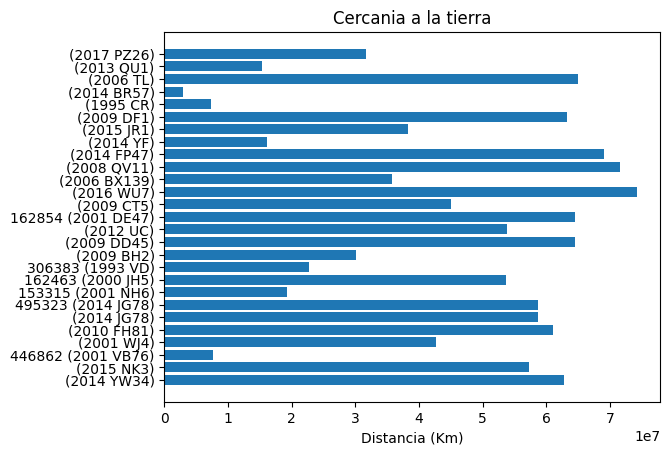
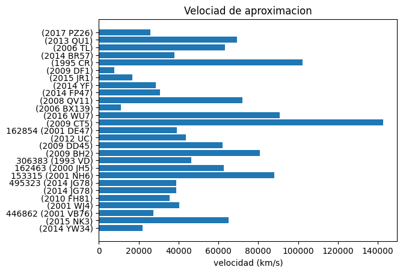
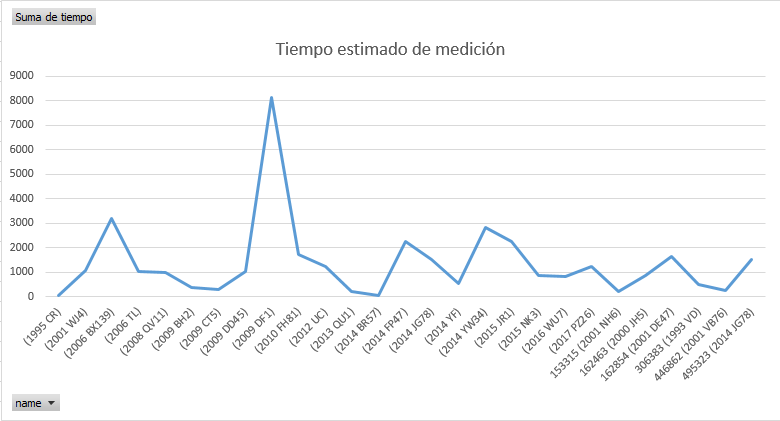
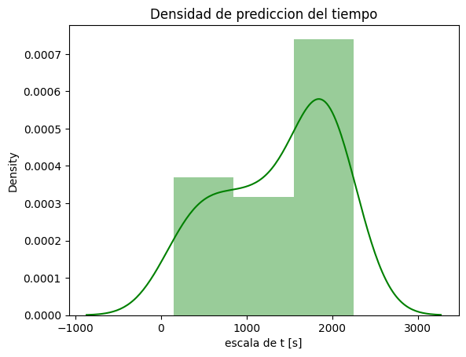
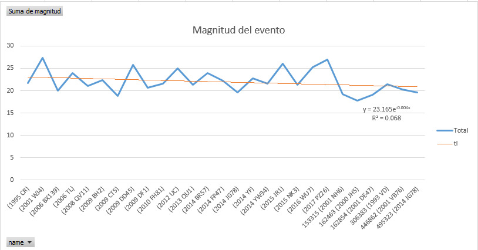

Datos
En esta entrada hablaremos sobre asteroides, seguimos como en el post anterior trabajando con archivos de
la NASA. Esta vez en formato .json cada archivo contiene multiples datos acerca de los asteroides
pero fueron de dificil analisis por el modo en que se encuentran estos tipos de archivos. Es por esto que dentro de
la carpeta contenida en GitHub hay un archivo llamado file19950101.py que basicamente su funcion es buscar
resultados dentro de cada archivo de diccionario tipo .json y mandar las variablable hacia otro archivo
llamado conector.py este ultimo encargado de almacenar en una base de datos tipo SQLite todos los
valores extraidos.


A partir de estos datos se obtuvo el tiempo de en que se hizo la medicion, esto es un factor importante
debido a que algunos de estos asteriodes representan un peligro real para la tierra, y prevenir el impacto
previamente aumentan las posibilidades de actuar aunte una posible catastrofe.

Vista de los datos
A partir de estos datos se obtuvo el tiempo de en que se hizo la medicion, esto es un factor importante
debido a que algunos de estos asteriodes representan un peligro real para la tierra, y prevenir el impacto
previamente aumentan las posibilidades de actuar aunte una posible catastrofe.
La prediccion para este caso es un poco sin sentido ya que para prevenir un impacto es necesario
obtener mayor informacion, y la fuente de datos solo tiene el objetivo de documentar. Pero si podemos
predecir una escala de tiempo de nuevos objetos y con esta escala es posible ver en que distancia o a que
velocidad se aproximan los objetos.
En su mayoria, los que veremos a continuacion es que podemos obtener muchos objetos con un tiempo superior a
1000 segundos. Evidenciando que para un tiempo menos es posible que ya hayan desaparecido en la atmosfera.

Para predecir posible desastres fue necesario calsificar los eventos en tres tipos.
Peligro potencial [[Alto]]
Peligro potencial [[Medio]]
Sin peligro
En un archivo llamado Bins.py se encuentra el codigo, si quieres descargarlo puedes hacer
click en bins.py
Predict...
La prediccion para este caso es un poco sin sentido ya que para prevenir un impacto es necesario
obtener mayor informacion, y la fuente de datos solo tiene el objetivo de documentar. Pero si podemos
predecir una escala de tiempo de nuevos objetos y con esta escala es posible ver en que distancia o a que
velocidad se aproximan los objetos.
En su mayoria, los que veremos a continuacion es que podemos obtener muchos objetos con un tiempo superior a
1000 segundos. Evidenciando que para un tiempo menos es posible que ya hayan desaparecido en la atmosfera.
Para predecir posible desastres fue necesario calsificar los eventos en tres tipos.
Peligro potencial [[Alto]]
Peligro potencial [[Medio]]
Sin peligro
En un archivo llamado Bins.py se encuentra el codigo, si quieres descargarlo puedes hacer
click en bins.py
Magnitud de los eventos
